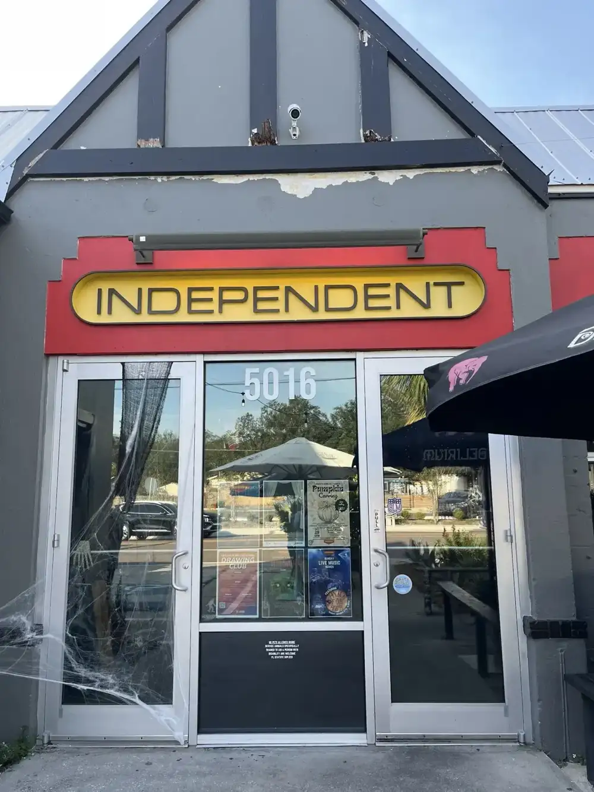
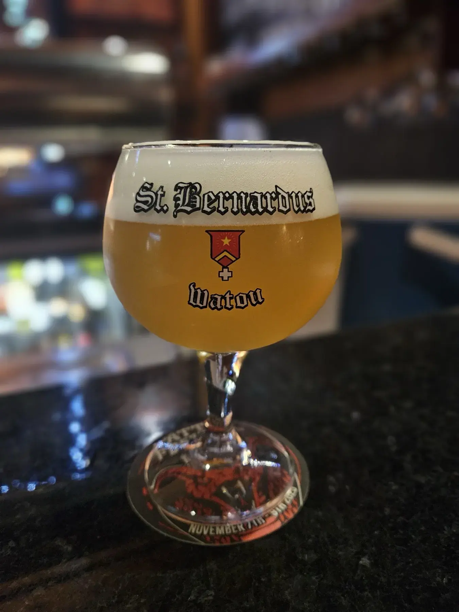
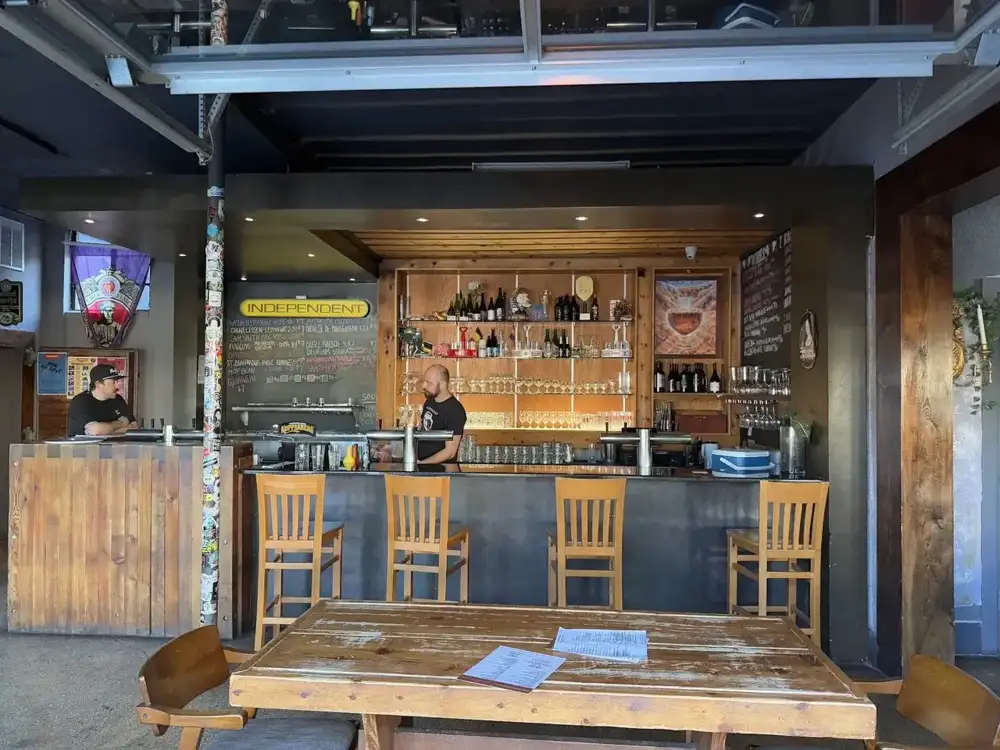
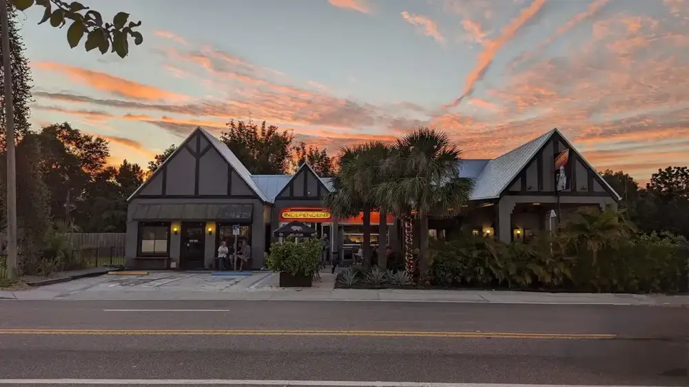
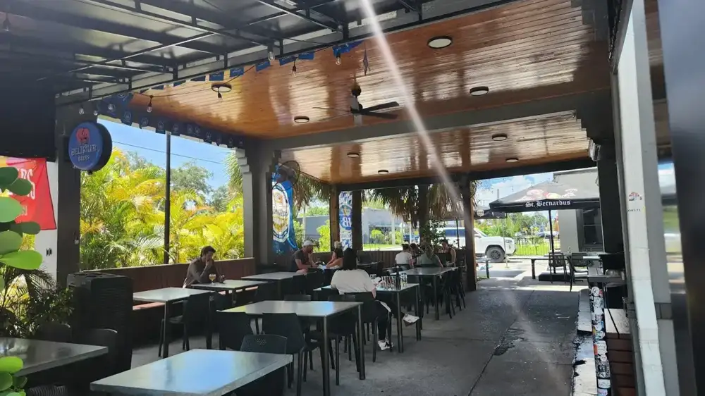
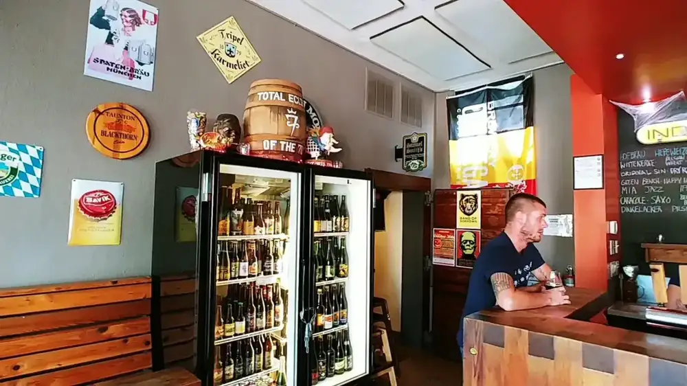

Pierogis
Pan-fried pierogis with dipping cups, one of the dishes a neighborhood couple ordered and called amazing.
Bar & kitchen · N Florida Ave, Tampa
A laid-back Tampa neighborhood bar with a deep beer list, a kitchen guests keep praising and live music on a lot of nights.

Guests talk about the drafts, bottles and cans, the mimosa bar and a kitchen that surprises beer people. One regular said the Reuben, the pierogis, the mojo pork tacos and the pretzels were all amazing.
Pan-fried pierogis with dipping cups, one of the dishes a neighborhood couple ordered and called amazing.

A big soft pretzel in a paper-lined basket, from a snacks menu that also includes a Reuben, mojo pork tacos and a rotating soup.

Drafts, bottles, cans, cider, sours, wine and a mimosa bar. Guests say staff happily offer samples.




4.6 1477 Google reviews
Finally checked this place out in our neighborhood and don’t know why we didn’t visit sooner! So good! No wonder they have been open for almost 17 years. We ordered the Reuben (wife lover it), the pierogis, mojo pork tacos and the pretzels… all were amazing! Service by Chris was immaculate and felt like we were being taken care by a friend.
We stumbled on this place looking for an open place on New Years Day for Brunch. Independent did not disappoint! Really nice selection of beers,cider,sours, wine,mimosa bar, ..I'm sure I'm leaving something out..lol They had a very delicious NYD menu and it tasted soo good. Like secret little hints of flavor that you can't quite place your finger on it with such a good flavor blends. Mmm.
I’ve been coming to Independent for all three Brazil 🇧🇷 World Cup games, and every visit has been fantastic. We’ve had both food and drinks each time, and the service has been outstanding. We especially appreciate the team reserving tables for us and helping create such a great atmosphere for the matches.

Independent sits in a gabled building on North Florida Avenue, with a yellow oval sign over a red band and a garage-style bar that opens to the street. Inside it is wood, chalkboards and a back bar full of bottles.
A reviewer called it a neighborhood place that has been open for almost 17 years. Guests mention a bartender named Chris who sampled beer with them and made suggestions that were on point, live music like a jazz trio and a guy on electric guitar, fans on the patio, and tables set aside for Brazil World Cup matches.
5016 N Florida Ave, Tampa, FL 33603
Find us at 5016 N Florida Ave. Guests say tables can be reserved for big match days, so call ahead.